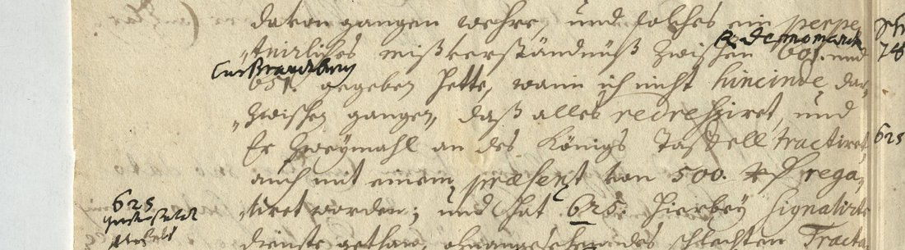
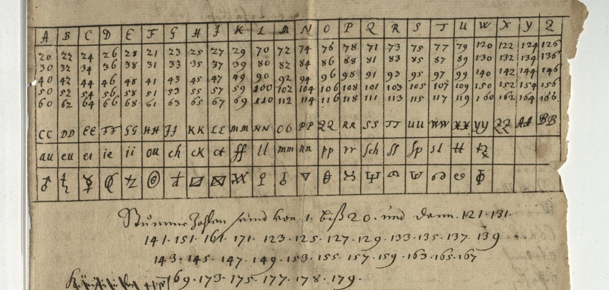

At a glanceExternal key matched · partial (92% of the cipher)
- The letter
- A signed despatch in German from Hamburg, dated 4/14 May 1672, to the Hessian chancellor (“Herr Canzler”) at Kassel. The writer is not identified.
- Where
- Hessisches Staatsarchiv Marburg, HStAM 4 f Dänemark Nr. 125, ff. 2–4. HCPortal record 494, “partially solved”, with no transcription attached.
- The cipher
- Names are written as three-digit code numbers (26 in the letter). Two short passages on the last page are in a letter cipher: five two-digit numbers for each letter, doubled capitals as more homophones, and signs for syllables.
- How it was deciphered
- A second hand glossed the code numbers on the leaf. The letter table of a Hessian key of 1666, filed in another Marburg collection (HCPortal key 255), reads both passages without change.
- What it says
- Danish anger at a French–Swedish treaty, a plan to bring Brandenburg into the Danish–Brunswick alliance, and Holstein “totaliter disgustirt” at the Landtag’s demands; “Gott geb das all wol ablauff”.
- Still open
- Five signs before “in Holstein” decipher as e r t a z and make no word; the 1672 key, which differs from the 1666 one in at least one cell, is not available. The gloss for code 625 is only partly legible.
01 The letter and its glosses
The letter fills three pages. It opens “Hoch Edler Herr, Mein insonders hochgeehrter Herr Canzler” and is dated at the foot “Hamburg den 4/14 May 1672”, in both calendars. It is clear German in Kurrent script, with Latin and French words in Latin script. The writer reports on his reception at the Danish court, on ceremonial quarrels between Denmark and Brandenburg, on the mission of a Blumenthal (code 630), on a treaty between France and Sweden that left Denmark out, and on a Holstein Landtag at which the estates refused the King’s demands. This was the spring in which France opened the war on the Dutch Republic. (This background is not from the sources and was not checked here.)
Names are written as code numbers: 601 for the King of Denmark, 651 for the Elector of Brandenburg, 829 for Berlin, 774 for Holland, 768 for Sweden, and so on. A second hand, in black ink and Latin script, wrote the meaning over almost every number and in the margins. The same hand wrote “disgustirt und erta?in holstein” in the margin beside the first letter-cipher passage, and a few letters over the second. This is the “partial solution” HCPortal refers to. The hand is not dated: it may be the Kassel chancery’s, or a later reader’s.

02 The key from another file
The two passages on f. 4r use a letter cipher, not the code numbers. HCPortal holds 319 cipher keys, 106 of them from the Marburg collections 4 d and 4 f. Looking through their first pages, four are of the same kind as this letter: two-digit homophones and doubled capitals. One of them, key 255 (HStAM 4 d Nr. 1234, ff. 13–16), is a Hessian key whose back sheet names Secretary Lincker and the years 1666 and 1676. Its deciphering table, key 254 on f. 12, confirms the doubled capitals.

In the table, A to K take the numbers 20 to 69 in columns of ten (A 20 30 40 50 60, B 22 32…, F 21 31…), L to U take 70 to 119, and W to Z take 120 to 166. CC stands for a, DD for b, and so on to BB for z. Further signs stand for au, ch, ff, ll, st, tt and other syllables, and 1 to 19 are nulls. The table gives the second passage’s glossed letters unchanged: 63 g, 38 e, 22 b, FF d, 20 a, 75 s, 96 o, NN l, 50 a, 32 b, 110 l. The key’s word list does not fit, though: there Alliance is 311 and Denmark 184, while this letter has codes from 303 to 834. The 1672 correspondence used the same letter table with another word list, which is not on HCPortal. For the code numbers the glosses are the only source.
03 The two passages

In this hand 6 looks like b and 2 like r, so “b7” is 67, “ro” is 20. The sign before 37, two tall looped b-shapes unlike the closed 6 of 26 in the same line, is the doubled capital BB. The first passage follows a report that the Holstein estates broke up “protestando” and would let it come to forced collection:
Totaliter FF 67 85 33 XX st LL 113 WW · 119 74 26 · 28 83 117 20 BB · 37 104 · 634
Totaliter disgustirt und [e r t a z] in Holstein, nun sowohl als in Dänemark Adel, Bürger und Bauern nun allerorten in plaintes combiniret.
“Totally disgusted and […] in Holstein, nobles, burghers and peasants are now joined in complaints everywhere, in Holstein as in Denmark.” The sign after XX is the key’s sign for st. The five signs 28 83 117 20 BB give e r t a z, which is not a word; the glosser got the same letters and wrote “erta?in”.
The second passage follows a Latin sentence about an insidious enemy:
insidiosus hostis 768: 55 76 tt · 63 38 22 · FF 20 75 · 20 ll · YY 96 NN · 50 32 110 au ff
insidiosus hostis Sueco: Gott geb das all wol ablauff.
“… the Swede, an insidious enemy: God grant that all goes well.” 768 is Sweden, as the margin note “Schweden 768” and the gloss “Sueco” say. In the 1666 table 55 is h; the glosser read g and the word is Gott, so either the 1672 table differs from the 1666 one here or 55 is a slip for 53. The last two signs are read as the key’s au and ff signs, which look like an 8 and a doubled X; as plain numbers they would be a null and u.
04 The code numbers
All 26 code numbers in the letter, with the gloss over each (H: gloss; M: gloss partly legible; I: inferred):
- 601 King of Denmark (four times), 834 “Rey Danae”, King of Denmark; 651 Elector of Brandenburg (three times), 653 “Cur Brandenb.”, Elector of Brandenburg; 829 Berlin (twice); 630 Blumenthal (twice); 774 Holland, 775 the States General; 576 France; 768 Sweden (twice); 634 Holstein; 447 641 “Herzog von Ploen”; 303 alliance (H).
- 625, twice: the margin gloss reads something like “Statthalter Ahlefeldt” (M).
- 447 602 in “eine estroite alliance zwischen 447 602 und 834”: the glosser wrote “Haus Braunschweig”, struck it and wrote “Kayser”. Since 447 is Herzog in the same line and the clear text above names the “Foedus Dano-Brunsvicense”, 447 602 is taken as Herzog [von] Braunschweig (I).
The letter’s chief news in clear: the French–Swedish treaty, concluded without Denmark, “gibt Verdruss”, and 625 is to go to Berlin in a few weeks to bring Brandenburg into the Danish–Brunswick alliance.
05 Method
The HCPortal record and its three images were fetched through the HCPortal API. The cipher parts were transcribed from full-resolution crops. The margin gloss of the first passage was tried against its signs first, with the doubled capitals as nulls and as letters; neither fitted. All 319 key records on HCPortal were then fetched, and the first pages of the 106 Marburg keys from collections 4 d and 4 f were screened in contact sheets. Key 255 was the one whose letter table gave the second passage’s glossed letters without change. A short script applies it (decrypt.py). The five open signs were re-cropped at three times the scan’s size and searched four ways (see below) with the project’s German language model for 1600–1670 and a corpus of period German, without a convincing word. The alliance the letter prepares was concluded at Braunschweig on 12/22 September 1672 between the Emperor, Denmark, Brandenburg, Brunswick and Hessen-Kassel.
Extent: 64 cipher tokens (38 letter-cipher signs and 26 code numbers). All have a value; 59 read as sense, 92.2%. That is below the project’s 95% bar, so the extent is partial.
06 What remains uncertain
- Passage 1, signs 28 83 117 20 BB (e r t a z) before “in Holstein”: no word. The glosser, who evidently had the 1672 key, got the same letters (“erta?in” in the margin). The 1672 table is not the 1666 one cell for cell: 55 is g in this letter but h in key 255. So either the 1672 table differs at these signs too, or the encipherer slipped; without the 1672 key or another copy of the letter, neither can be settled. The signs were re-cropped at three times the scan’s size and four searches were run: any letter at one or two places; digit look-alikes (1/7, 2/7, 3/5/8, 6/0/8, 4/9) and the key’s looped syllable signs at one or two places; the two signs not confirmed elsewhere in the letter left free; and an alignment against every word beginning er-, ver-, ir-, ex- or ent- in German printed texts of 1470–1770. The best candidates (ermatt, erstatt, erbar, ertapt) need two or more changes, and none fits the sentence well enough to adopt.
- Passage 2: 55 read as g (a slip for 53, M); the sign read as ll (M); the last two signs read as the au and ff signs (M).
- Code 625: the gloss is only partly legible (M). 602 = Braunschweig is inferred (I).
- The writer’s signature is not made out. The other despatches in Nr. 125 are not digitised.
Full texts
The transcription and the decryption of every document on this page, so that the reading can be used and checked. Short files are shown here; all are in the repository.
Hamburg, 4/14 May 1672, HStAM 4 f Dänemark Nr. 125, ff. 2-4
A despatch from Hamburg to the Hessian chancellor at Kassel on the writer's reception at the Danish court, Blumenthal's mission and Brandenburg-Danish ceremonial quarrels, the French-Swedish treaty that passed Denmark by, the plan to draw Brandenburg into the Danish-Brunswick alliance, and the Holstein Landtag's refusal of contributions.
Transcription
# HStAM 4 f Dänemark Nr. 125, ff. 2-4 (HCPortal 494). Letter-cipher passages, f. 4r. # Signs: numbers; doubled capitals (FF, XX, LL, WW, YY, NN; 'BB' written with looped b-shapes); # [st] and [tt] are the key's syllable signs; [I] the key's ll sign (a looped stem, like the key's ♀); [768] etc. are nomenclator codes. # Passage 1 (f. 4r, lines 14-16), after clear "Totaliter": FF 67 85 33 XX [st] LL 113 WW 119 74 26 28 83 117 20 BB 37 104 [634] # Passage 2 (f. 4r, lines 18-19), after clear "insidiosus hostis": [768] 55 76 [tt] 63 38 22 FF 20 75 20 [I] YY 96 NN 50 32 110 8 XX
Transcription
# Nomenclator code numbers in the letter, in order, with the interlinear/marginal gloss of the # contemporary decipherer (black ink, Latin script) and the grade of the reading here. # page code gloss on the leaf reading grade f2r 630 Blumenthal Blumenthal H (gloss) f3r 601 K. Dennemarck King of Denmark H (gloss) f3r 651 Curbrandenburg Elector of Brandenburg H (gloss) f3r 625 margin: "625 Statthalter(?) Ahlefeldt(?)" Statthalter Ahlefeldt (?) M (gloss hard to read) f3r 653 "Cur Brandenb." (3x zoom) Elector of Brandenburg H (gloss) f3r 829 Berlin Berlin H (gloss) f3r 651 Curbrandenburg Elector of Brandenburg H (gloss) f3r 630 Blumenthal Blumenthal H (gloss) f3r 774 Hollandt Holland H (gloss) f3r 775 Gen. Staden States General H (gloss) f4r 601 der Konig in Dennemarck King of Denmark H (gloss) f4r 576 Franckreich France H (gloss) f4r 768 margin: "Schweden 768" Sweden H (gloss) f4r 601 Dennemarck Denmark H (gloss) f4r 625 margin: "625." (no gloss) as above M (same code) f4r 829 Berlin Berlin H (gloss) f4r 651 Curbrandenburg Elector of Brandenburg H (gloss) f4r 634 margin: "Holstein" Holstein H (gloss) f4r 601 dennemarck Denmark H (gloss) f4r 768 Sueco Sweden H (gloss) f4r 447 Herzog (with 641: "Herzog von Ploen") Duke H (gloss) f4r 641 Ploen Plön H (gloss) f4r 303 alliance alliance H (gloss) f4r 447 (gloss "Haus Braunschweig" struck, "Kayser") Duke C (same code as above) f4r 602 (same struck gloss) Braunschweig I (struck gloss + 'Foedus Dano-Brunsvicense' in clear) f4r 834 Rey Danae Rex Daniae, King of Denmark H (gloss)
Decryption
HStAM 4 f Dänemark Nr. 125, ff. 2-4 (HCPortal 494). Hamburg, 4/14 May 1672, to the Hessian chancellor.
Cipher parts only; clear context in plain type, decipherment in [brackets], codes in <angle brackets>.
Grades: H gloss/key, C context-confirmed, M uncertain, I inferred. ?? = unread.
f. 2r end: ... aber zu der Zeit der <630 Blumenthal> gegen[wart] ...
f. 3r: ... ein perpetuirliches Missverständnüs zwischen <601 König in Dennemarck> und <651 Churbrandenburg> gegeben hätte ...
... und hat <625 Statthalter Ahlefeldt?> hierbey signalirte dienste gethan ...
... das er an <653 Churbrandenburg> hat empfangen ... das Portrait mit Diamanten besetzt ...
Obgleich in <829 Berlin> man den Ceremonien-bogen gar zu hoch spannet ...
... dass niemand mit anderem character nach <651 Churbrandenburg> gehet als Ministre du Roy. <630 Blumenthal>
abfertigung ist noch favorable gewesen ... <774 Holland> ... wan <775 General Staaten> ...
f. 4r: ... und <601 der König in Dennemarck> seinen gebührenden respect anthut. dass <576 Frankreich> mit <768 Schweden>
geschlossen und <601 Dennemarck> vorbeygangen, gibt Verdruss. <625> wird hierauff nach Verfliessung etlicher
wochen zu <829 Berlin> gehen und das werck zum schluss bringen, dass <651 Churbrandenburg> in das Foedus
Dano-Brunsvicense mit eingezogen werde.
... Landstände ... protestando voneinander geschieden, und wollen es ad rigorem Executionis ankommen lassen.
Passage 1: Totaliter [disgustirt und] ??[e r t a z]?? [in] <634 Holstein>, nun sowohl als in <601 Dennemarck> Adell,
Bürger und Bauern nun aller orten in plainten combiniret;
Passage 2: si olim non erat ... insidiosus hostis <768 Sueco>: [Gott geb das all wol ablauff]
(55 = h in the key, a slip for 53 g: H by gloss; [I] = all (M); 8 = au (M); XX = ff (M))
... war auch zu Hamburg und hat selbiger eine estroite <303 alliance> zwischen <447 Herzog> <602 Braunschweig (I)>
und <834 Rex Daniae> ... (447 641 = Herzog von Plön, earlier in the same line)
Count: 38 letter-cipher signs (ct.txt) + 26 code numbers (codes.txt) = 64 cipher tokens.
Given a value: 64 of 64. Read as sense: 59 of 64 (92.2%); the five signs 28 83 117 20 BB decipher as
e r t a z and make no word (BB = z; the glosser got the same letters).Reading
# HStAM 4 f Dänemark Nr. 125, ff. 2-4 (HCPortal 494), Hamburg 4/14 May 1672: the cipher items in their clauses, reading
Rests on: `reading.txt` (codes from the key, `codes.txt`; letter-cipher passages `ct.txt`, with the contemporary
glosses). Written out for the v3 verification (23 Oct 2026) without the bracket notation of reading.txt, which the
scorer takes for holes: deciphered words plain, resolved code numbers as {name}, the doubtful code 625 (Statthalter
Ahlefeldt?) and the bare 625 as [?Ahlefeldt], 602 (graded inferred) as [?Braunschweig], the five signs that make no word (e r t a z) as [?], the grade letters
left out. The letter is clear German around these items; "..." marks clear text that is not transcribed (the full
letter is on the HCPortal images). The two letter-cipher passages are given last.
## Reading
Aber zu der Zeit der {Blumenthal} gegenwart ... ein perpetuirliches Missverständnüs zwischen {König in Dennemarck}
und {Churbrandenburg} gegeben hätte ... und hat [?Ahlefeldt] hierbey signalirte dienste gethan ... das er an
{Churbrandenburg} hat empfangen ... das Portrait mit Diamanten besetzt. Obgleich in {Berlin} man den Ceremonien-bogen
gar zu hoch spannet ... dass niemand mit anderem character nach {Churbrandenburg} gehet als Ministre du Roy.
{Blumenthal} abfertigung ist noch favorable gewesen ... {Holland} ... wan {General Staaten} ... und {der König in
Dennemarck} seinen gebührenden respect anthut. Dass {Frankreich} mit {Schweden} geschlossen und {Dennemarck}
vorbeygangen, gibt Verdruss. [?Ahlefeldt] wird hierauff nach Verfliessung etlicher wochen zu {Berlin} gehen und das
werck zum schluss bringen, dass {Churbrandenburg} in das Foedus Dano-Brunsvicense mit eingezogen werde.
Totaliter disgustirt und [?] in {Holstein}, nun sowohl als in {Dennemarck} Adell, Bürger und Bauern nun aller orten in
plainten combiniret.
Si olim non erat ... insidiosus hostis {Sueco}: Gott geb das all wol ablauff. War auch zu Hamburg und hat selbiger
eine estroite {alliance} zwischen {Herzog} [?Braunschweig] und {Rex Daniae} ...Translation
# HStAM 4 f Dänemark Nr. 125, ff. 2-4 (HCPortal 494), Hamburg 4/14 May 1672: English translation of the cipher items in their clauses
Translation (Claude Opus 5.5, 23 Oct 2026) of `HCP494_reading.md`, **an excerpt**: the ciphered items with the clauses
round them; the clear German letter round them is not transcribed in the repository ("..." marks it). Resolved codes
are in {braces} as in the reading; `[?Ahlefeldt]` (code 625) and `[?Brunswick]` (602) are doubtful; `[?]` five signs
that make no word. The middle sentences mix German, French and Latin as the letter does.
## Translation
But at the time of {Blumenthal}'s presence ... [it] would have given a perpetual misunderstanding between {the King
of Denmark} and {the Elector of Brandenburg} ... and [?Ahlefeldt] has done signal services in this ... that he has
received from {the Elector of Brandenburg} ... the portrait set with diamonds. Although in {Berlin} they stretch the
bow of ceremonies far too high ... that no one goes to {the Elector of Brandenburg} with any other character than
Minister of the King. {Blumenthal}'s despatch has still been favourable ... {Holland} ... if {the States General}
... and pays {the King of Denmark} his due respect. That {France} has concluded with {Sweden} and passed {Denmark}
by gives annoyance. [?Ahlefeldt] will, after the lapse of some weeks, go to {Berlin} upon this and bring the work to
a conclusion, so that {the Elector of Brandenburg} be drawn into the Danish-Brunswick alliance.
Totally disgusted, and [?] in {Holstein}, now as well as in {Denmark}, nobility, burghers and peasants are now
everywhere combined in complaints.
If formerly he was not ... an insidious enemy to {the Swede}: God grant that all may turn out well. [He] was also at
Hamburg, and the same has [made] a close {alliance} between {Duke} [?of Brunswick] and {the King of Denmark} ...Key: decrypt.py, codes.txt
07 Sources
- Hessisches Staatsarchiv Marburg, Best. 4 f Dänemark Nr. 125, ff. 2–4. HCPortal record 494 (images: api.hcportal.eu media 1385–1387), record created by Eugen Antal.
- Hessisches Staatsarchiv Marburg, Best. 4 d Nr. 1234, ff. 12–16: HCPortal keys 254 (the Scala) and 255 (the key, 1666/1676).
- E. Antal and M. Mírka, on the Thirty Years’ War cipher keys in the Hessisches Staatsarchiv Marburg, HistoCrypt proceedings, for the Marburg key collection.
Transcription, decoder, code list, notes and reading: targets/hesse1672/ in the repository.